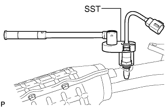
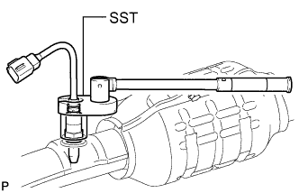

AIR FUEL RATIO SENSOR > REMOVAL |
| 1. REMOVE FRONT FENDER APRON SEAL LH |
 |
Using a clip remover, remove the 4 clips and fender apron seal.
| 2. REMOVE FRONT FENDER APRON SEAL REAR LH |
 |
Using a clip remover, remove the 4 clips and fender apron seal.
| 3. REMOVE FRONT FENDER APRON SEAL FRONT RH |
 |
Using a clip remover, remove the 3 clips and fender apron seal.
| 4. REMOVE FRONT FENDER APRON SEAL REAR RH |
 |
Using a clip remover, remove the 4 clips and fender apron seal.
| 5. REMOVE FRONT NO. 2 EXHAUST PIPE ASSEMBLY |
Disconnect the heated oxygen sensor connector.
Remove the 2 bolts from the center exhaust pipe.
Remove the 2 bolts, 2 nuts and front No. 2 exhaust pipe.
Remove the 2 gaskets from the front No. 2 exhaust pipe.
| 6. REMOVE FRONT EXHAUST PIPE ASSEMBLY |
Disconnect the heated oxygen sensor connector.
Remove the 2 bolts with the 2 compression springs from the center exhaust pipe.
Remove the 2 nuts and front exhaust pipe.
Remove the 2 gaskets from the front exhaust pipe.
| 7. REMOVE MANIFOLD STAY |
 |
Remove the 3 bolts and No. 1 manifold stay.
| 8. REMOVE EXHAUST MANIFOLD SUB-ASSEMBLY RH |
Disconnect the air fuel ratio sensor connector.
 |
Remove the 6 nuts, exhaust manifold and gasket from the cylinder head RH.
| 9. REMOVE NO. 2 MANIFOLD STAY |
 |
Remove the 3 bolts and No. 2 manifold stay.
| 10. REMOVE EXHAUST MANIFOLD SUB-ASSEMBLY LH |
Disconnect the air fuel ratio sensor connector.
 |
Remove the 6 nuts, exhaust manifold and gasket from the cylinder head LH.
| 11. REMOVE AIR FUEL RATIO SENSOR (for Bank 1 Sensor 1) |
 |
Using SST, remove the sensor.
| 12. REMOVE AIR FUEL RATIO SENSOR (for Bank 2 Sensor 1) |
 |
Using SST, remove the sensor.